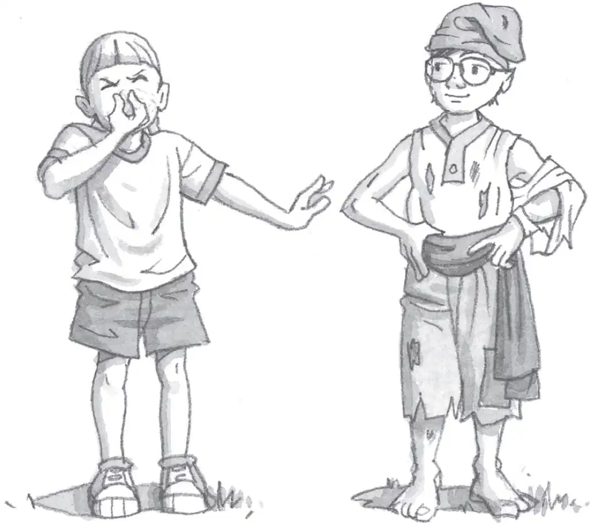
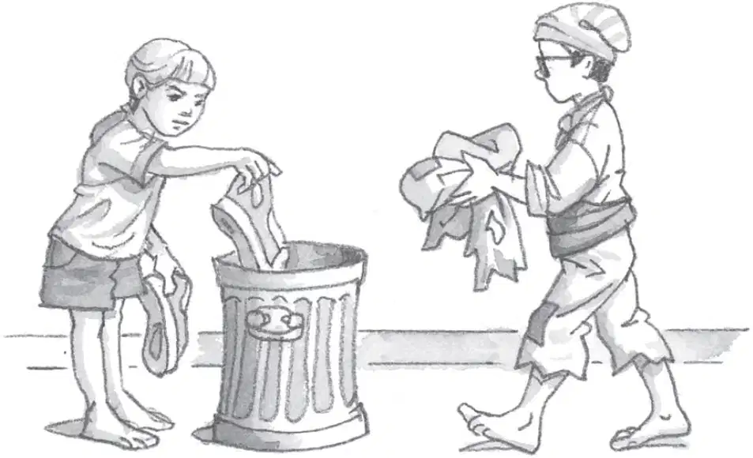
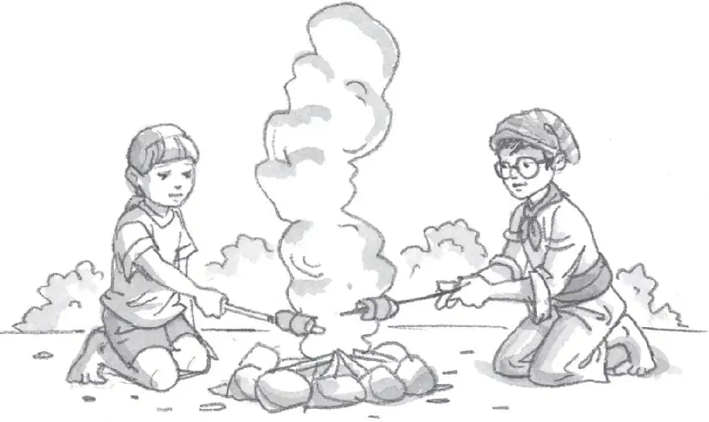

Buccaneers were famous for their dirty, stinky ways. Here’s how to become a buccaneer:
1. Don’t bathe or change clothes!
Buccaneers didn’t wash for months at a time. They made their clothes from animal skins and dressed in the same clothes every day—until they wore out!

2. Don’t wear shoes!
Buccaneers almost always went barefoot, even when they attacked a ship.

3. Have a barbecue!
Ships from all over the world stopped at the buccaneers’ islands for hides, water, and supplies. The sailors often enjoyed the meat the buccaneers grilled on their boucans.
